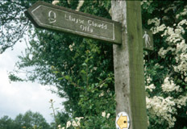

Offa’s Dyke Path, as walked by Thann and Jennifer Ward, May/June, 2000
| Arrival Day
Chepstow to Tintern Tintern to Monmouth Monmouth to Llanvetherine Llanvertherine to Llanthony Llanthony to Hay-on-Wye Hay-on-Wye Hay-onWye to Kington Kington to Knighton Knighton to Little Brompton Farm Little Brompton Farm to Pool Quay Pool Quay to Nantmawr Nantmawr to Pentre Pentre to Llangollen Llangollen to Llandegla Llandegla to Bodfari Bodfari to Prestatyn  |
Offa's Dyke is a mound and ditch constructed on the orders of Offa, King of Mercia in the eighth century, to mark his boundary with Wales, from the Bristol Channel to the North Sea. About 80 miles of it were constructed, much of the rest of the boundary being either a river or an earlier dyke. The Offa's Dyke Path follows most of the existing dyke, and since Offa's Dyke is still close to the boundary of Wales and England, the path crosses back and forth many times between the countries. The path is roughly 177 miles long, going through many different types of landscape. There were high hills, ridge walks, wooded valleys, heather moors, fields with crops, and fields with cows or sheep. We walked by canals and rivers and on cliff tops. It rained, of course, and paths got muddy and slippery. But then the sun would come out, and everything would be gloriously fresh! |
Note: Some photos can be seen in a larger version, by clicking on them. In this case, the photo in the page has a border.
Here are a couple of photos of us taken by our friends Fred and Theo.